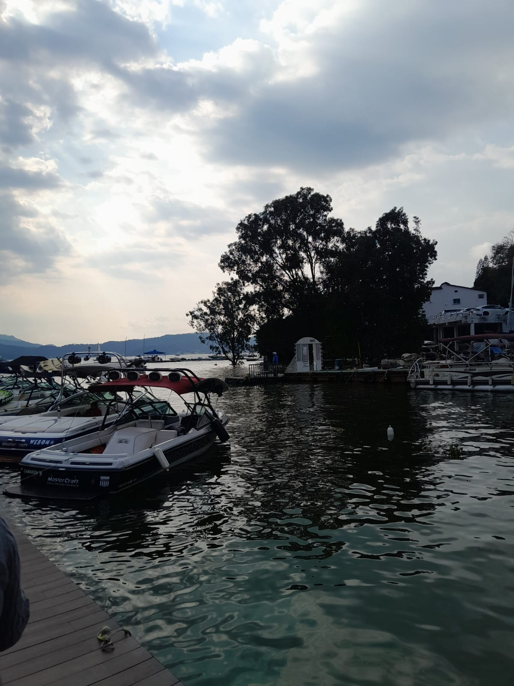
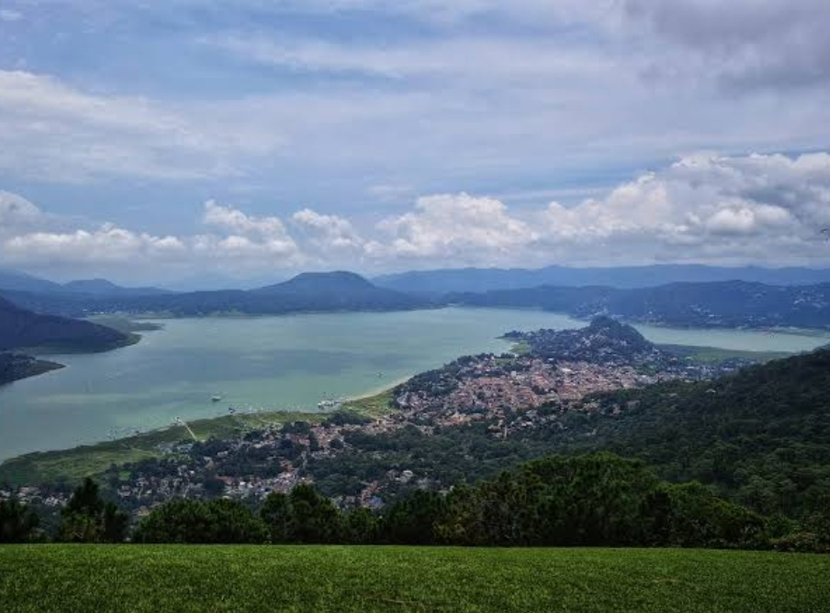

¿Qué es? Es una cascada pequeña y tranquila de unos 12-15 metros de altura que forma el Río El Molino, también la conocen como Cascada Avándaro.
No es tan alta como Velo de Novia, pero tiene varias pozitas naturales de agua cristalina donde te puedes meter.¿Dónde está? En Avándaro, a 4 km del centro de Valle de Bravo.
La dirección exacta es Ruta del Bosque 112, Avándaro, 51200 Valle de Bravo. Coordenadas 19.172647, -100.118432.La encuentras primero que Velo de Novia si vas por el camino al Molino Viejo instagram, comexpedi, mxHistoria: Ahí había un molino viejo de trigo del siglo XIX que usaba la fuerza del agua para moler, por eso le pusieron El Molino. Quedan ruinas del molino cerca. Era parte de la hacienda de Avándaro.

Es una presa artificial creada entre 1947 y 1949 para generar luz eléctrica, mide 18.6 km² de superficie y tiene hasta 40 metros de profundidad, se convirtió en el atractivo más importante del Estado de México.
El agua viene del Río Toluca, alrededor hay casas de descanso de gente famosa, puedes rentar velero por $600 la hora, kayak $150, yate privado $2,000, o subirte al barco colectivo por $80.
También hay ski acuático, paddle board y lanchas rápidas. Hay restaurantes flotantes donde comes mientras el barco avanza. El mejor horario es a las 6pm para ver el atardecer que pinta todo el lago de naranja. En febrero hay regatas internacionales de veleros.

Son los dos miradores más famosos. El Cerro de La Peña está en el centro, subes 250 escalones en 20 minutos. Arriba hay una cruz blanca de 5 metros que se ve desde todo Valle.
Monte Alto está a 10 minutos en coche, es una reserva natural de 300 hectáreas a 2,400 metros de altura. Desde ahí despegan parapentes y alas delta, es sede internacional de parapente.
Puedes volar en tándem por $1,800 con instructor.Hay rutas de bici de montaña de 5, 10 y 20 km, y zona de camping $100 por noche. En invierno de noviembre a marzo llegan miles de mariposas monarca que hibernan en los oyameles. Lleva chamarra porque arriba hace mucho frío y niebla.